R code for example in Chapter 18:
Multiple explanatory variables
We used R to analyze all examples in Chapter 18. We put the code here so that you can too.
New methods on this page
-
Fit a linear model for two fixed factors:
algaeFullModel <- lm(sqrtArea ~ height * herbivores, data = algae) -
Residual plot:
plot(residuals(moleRatNoInteractModel) ~ fitted(moleRatNoInteractModel)) -
Other new methods:
- Linear model for randomized block design.
- Linear model for one categorical and one numeric variable (ANCOVA).
- Interaction plot.
- Visualize fit of null and full models to the data.
- Type I and Type III sums of squares.
Load required packages
We need ggplot2 for ordinary graphs. The nlme package fits models having a random effect. Include the car package to allow tests using Type 3 sums of squares. The tidyr package is optional – it provides one way to make a two-way table of data. You might need to install these additional packages on your computer if you have not already done so.
install.packages("car", dependencies = TRUE) # only if not yet installed
install.packages("tidyr", dependencies = TRUE) # only if not yet installedlibrary(ggplot2)
library(nlme)
library(car)
library(tidyr) # optionalFigure 18.1-1 Linear regression
Compare the fits of the null and univariate regression models to data on the relationship between stability of plant biomass production and the initial number of plant species assigned to plots. The data are from Example 17.3.
Read and inspect data
prairie <- read.csv(url("https://whitlockschluter3e.zoology.ubc.ca/Data/chapter17/chap17e3PlantDiversityAndStability.csv"), stringsAsFactors = FALSE)
head(prairie)## nSpecies biomassStability
## 1 1 7.47
## 2 1 6.74
## 3 1 6.61
## 4 1 6.40
## 5 1 5.67
## 6 1 5.26Log-transformation
Log-transform biomassStability.
prairie$logStability <- log(prairie$biomassStability)
head(prairie)## nSpecies biomassStability logStability
## 1 1 7.47 2.010895
## 2 1 6.74 1.908060
## 3 1 6.61 1.888584
## 4 1 6.40 1.856298
## 5 1 5.67 1.735189
## 6 1 5.26 1.660131Fit reduced model
In simple linear regression, the null or “reduced” model is a line whose slope is 0. To accomplish this, use a formula having a constant only. Leave nSpecies out of the formula. Show the fit in a scatter plot. You’ll need to specify a formula in geom_smooth() to force R to draw a line with no slope rather than the linear regression line. The formula is the same as in the preceding lm() command but uses “y” instead of the name of the y-variable. For these data, ggplot() won’t include “0” on the x-axis unless you tell it to.
prairieNullModel <- lm(logStability ~ 1, data = prairie)
ggplot(prairie, aes(nSpecies, logStability)) +
geom_point(size = 3, shape = 1, col = "firebrick") +
geom_smooth(method = "lm", formula = y ~ 1,
se = FALSE, col = "black") +
xlim(0,16) +
labs(x = "Species number treatment", y = "Log-transformed ecosystem stability") +
theme_classic()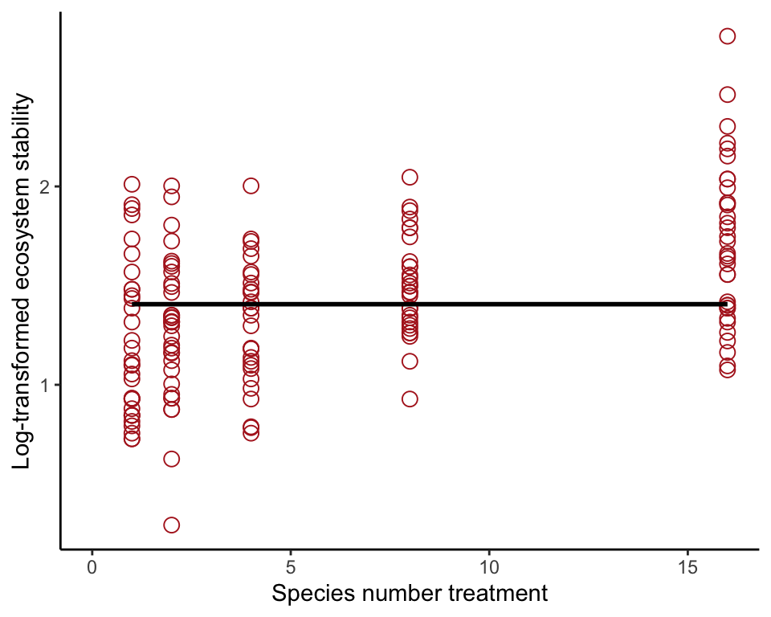
Fit full model
Now includes the treatment variable nSpecies in the formula. Show the fit in a scatter plot.
prairieRegression <- lm(logStability ~ nSpecies, data = prairie)
ggplot(prairie, aes(nSpecies, logStability)) +
geom_point(size = 3, shape = 1, col = "firebrick") +
geom_smooth(method = "lm", se = FALSE, col = "black") +
xlim(0,16) +
labs(x = "Species number treatment", y = "Log-transformed ecosystem stability") +
theme_classic()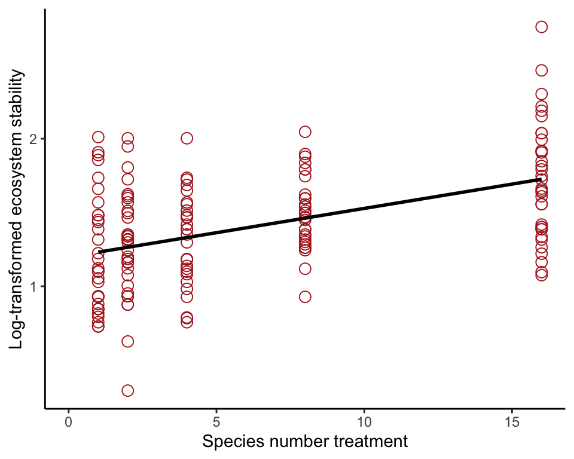
\(F\)-test of improvement in fit
This test determines whether the full (regression) model is a significant improvement in fit to the data.
anova(prairieRegression)## Analysis of Variance Table
##
## Response: logStability
## Df Sum Sq Mean Sq F value Pr(>F)
## nSpecies 1 5.5169 5.5169 45.455 2.733e-10 ***
## Residuals 159 19.2980 0.1214
## ---
## Signif. codes: 0 '***' 0.001 '**' 0.01 '*' 0.05 '.' 0.1 ' ' 1Figure 18.1-2. Generalizing regression
Compare the fits of the null and single-factor ANOVA model to data on phase shift in the circadian rhythm of melatonin production in participants given alternative light treatments. The data are from Example 15.1.
Read and inspect data
circadian <- read.csv(url("https://whitlockschluter3e.zoology.ubc.ca/Data/chapter15/chap15e1KneesWhoSayNight.csv"), stringsAsFactors = FALSE)
head(circadian)## treatment shift
## 1 control 0.53
## 2 control 0.36
## 3 control 0.20
## 4 control -0.37
## 5 control -0.60
## 6 control -0.64Set order of groups
For tables and graphs.
circadian$treatment <- factor(circadian$treatment,
levels = c("control", "knee","eyes")) Fit null model to data
In single-factor ANOVA, the null model fits the same mean to all groups. To accomplish, include only a constant in the model formula and leave out the treatment variable. Visualize the model fit (Figure 18.1-2 left).
circadianNullModel <- lm(shift ~ 1, data = circadian)
ggplot(circadian, aes(x = treatment, y = shift)) +
geom_point(color = "firebrick", size = 3) +
geom_hline(yintercept = predict(circadianNullModel)) +
labs(x = "Light treatment", y = "Shift in circadian rhythm (h)") +
theme_classic()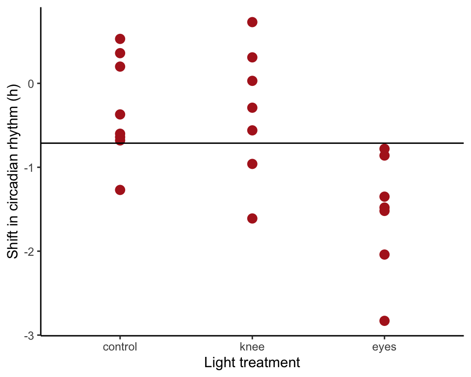
Fit full model to data
Now include the treatment variable in the formula. Visualise the model fit (using visreg(). This is not an exact replica of Figure 18.1-2 right).
circadianAnova <- lm(shift ~ treatment, data = circadian)
ggplot(circadian, aes(x = treatment, y = shift)) +
geom_point(color = "firebrick", size = 3) +
stat_summary(fun.y= mean, geom = "crossbar",
fun.ymin=mean, fun.ymax=mean, width = .4, color = "black") +
labs(x = "Light treatment", y = "Shift in circadian rhythm (h)") +
theme_classic()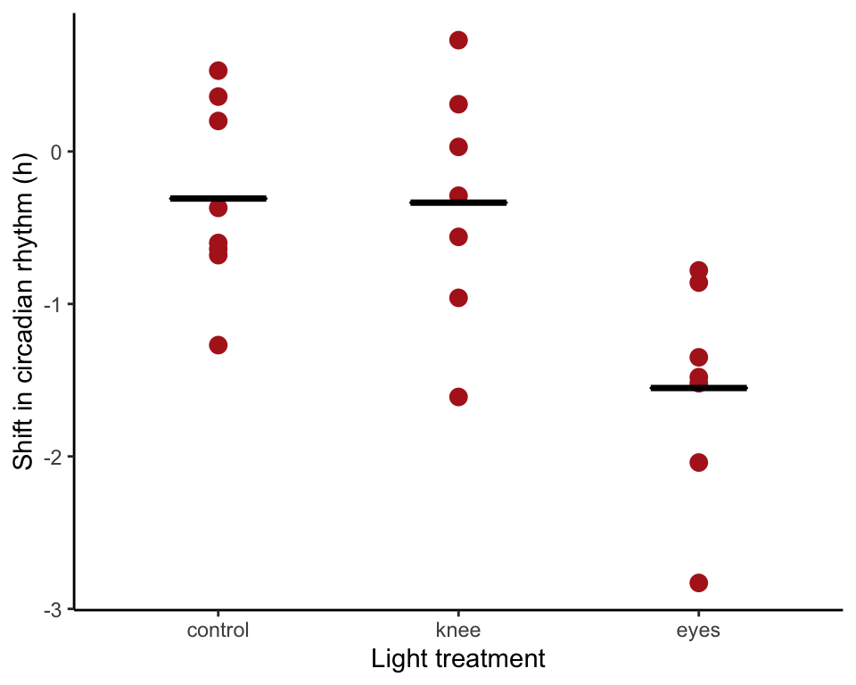
\(F\)-test of improvement in fit
Test of whether the full model is a significant improvement over the null model.
anova(circadianAnova)## Analysis of Variance Table
##
## Response: shift
## Df Sum Sq Mean Sq F value Pr(>F)
## treatment 2 7.2245 3.6122 7.2894 0.004472 **
## Residuals 19 9.4153 0.4955
## ---
## Signif. codes: 0 '***' 0.001 '**' 0.01 '*' 0.05 '.' 0.1 ' ' 1Example 18.2. Zooplankton
Analyze data from a randomized block experiment, which measured the effects of fish abundance (the factor of interest) on zooplankton diversity. Treatments were repeated at 5 locations in a lake (blocks).
Read and inspect data
zooplankton <- read.csv(url("https://whitlockschluter3e.zoology.ubc.ca/Data/chapter18/chap18e2ZooplanktonDepredation.csv"), stringsAsFactors = FALSE)
zooplankton## treatment diversity block
## 1 control 4.1 1
## 2 low 2.2 1
## 3 high 1.3 1
## 4 control 3.2 2
## 5 low 2.4 2
## 6 high 2.0 2
## 7 control 3.0 3
## 8 low 1.5 3
## 9 high 1.0 3
## 10 control 2.3 4
## 11 low 1.3 4
## 12 high 1.0 4
## 13 control 2.5 5
## 14 low 2.6 5
## 15 high 1.6 5Set order of groups
zooplankton$treatment <- factor(zooplankton$treatment, levels = c("control","low","high"))Table and graph of data
Only one measurement is available for each combination of treatment and block. tapply() in base R is one way to present a 2-way table of (Table 18.2-1). Another way is to use spread() in the tidyr package.
tapply(zooplankton$diversity, list(Treatment = zooplankton$treatment,
Location = zooplankton$block), unique)## Location
## Treatment 1 2 3 4 5
## control 4.1 3.2 3.0 2.3 2.5
## low 2.2 2.4 1.5 1.3 2.6
## high 1.3 2.0 1.0 1.0 1.6# or
spread(data = zooplankton, key = block, value = diversity)## treatment 1 2 3 4 5
## 1 control 4.1 3.2 3.0 2.3 2.5
## 2 low 2.2 2.4 1.5 1.3 2.6
## 3 high 1.3 2.0 1.0 1.0 1.6The following is code to display the data in a graph (not in the book, but probably should be). Lines connect values from different treatments in the same block.
ggplot(zooplankton, aes(x = treatment, y = diversity)) +
geom_line(aes(group = block)) +
geom_point(size = 5, col = "firebrick", alpha = 0.5) +
labs(x = "Treatment", y = "Zooplankton diversity (D)") +
theme_classic()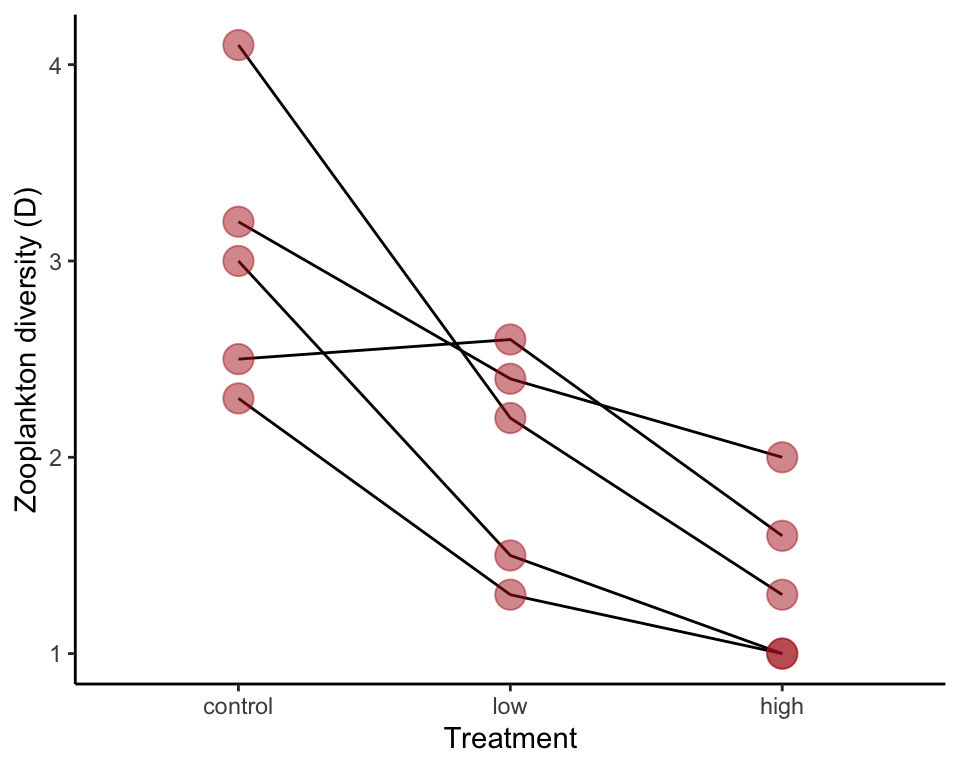
Fit null model
A blocking variable is typically analyzed as a random effect. We use lme() command from the nlme package. The fixed effect part of the formula (here, only a constant) is similar to a fixed-effect formula in lm(). The random effect is included in a second formula afterward. The structure 1|block indicates that we are fitting a random intercept (a constant) for each level of the block variable.
We leave out here the visualization of the null model fit.
zoopNullModel <- lme(diversity ~ 1, random = ~ 1| block, data = zooplankton)Fit the full model
The equation for the full model also includes the fixed treatment variable. The random effect part of the formula is unchanged.
zoopRBModel <- lme(diversity ~ treatment, random = ~ 1| block, data = zooplankton)To visualize this model fit we drew lines between the predicted values and overlaid the points. Only 4 lines are visible because one is lying over a second line.
ggplot(zooplankton, aes(x = treatment, y = diversity)) +
geom_line(aes(y = predict(zoopRBModel), group = block)) +
geom_point(size = 5, col = "firebrick", alpha = 0.5) +
labs(x = "Treatment", y = "Zooplankton diversity (D)") +
theme_classic()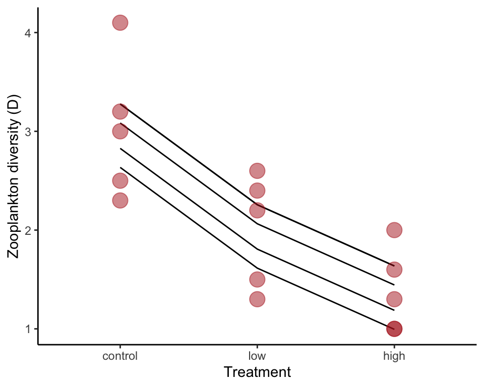
Alternatively, the following commands make a plot in base R.
interaction.plot(zooplankton$treatment, zooplankton$block,
response = predict(zoopRBModel), ylim = range(zooplankton$diversity),
trace.label = "Block", las = 1,
xlab = "Treatment", ylab = "Zooplankton diversity (D)")
points(diversity ~ treatment, data = zooplankton,
pch = as.numeric(zooplankton$block))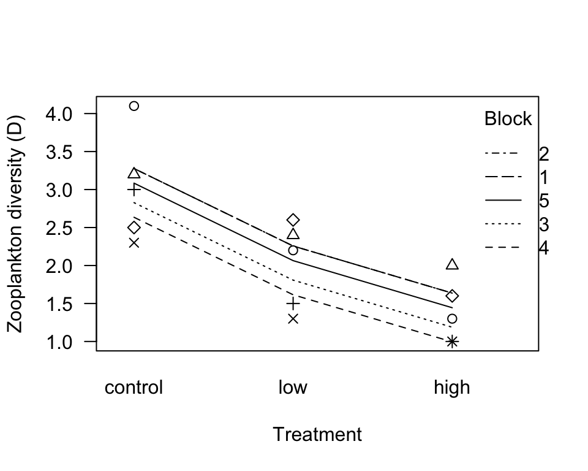
\(F\) test of improvement in fit
This test indicates whether the full model is a significant improvement over the null model. This represents the test of treatment effect. Notice that R will not test the random (block) effect of an lme() model.
anova(zoopRBModel)## numDF denDF F-value p-value
## (Intercept) 1 8 116.69518 <.0001
## treatment 2 8 16.36595 0.0015Example 18.3 Intertidal interaction
Analyze data from a factorial experiment investigating the effects of herbivore presence, height above low tide, and the interaction between these factors, on abundance of a red intertidal alga using two-factor ANOVA.
Read and inspect data
algae <- read.csv(url("https://whitlockschluter3e.zoology.ubc.ca/Data/chapter18/chap18e3IntertidalAlgae.csv"), stringsAsFactors = FALSE)
head(algae)## height herbivores sqrtArea
## 1 low minus 9.405573
## 2 low minus 34.467736
## 3 low minus 46.673485
## 4 low minus 16.642139
## 5 low minus 24.377498
## 6 low minus 38.350604Fit the no-interaction model.
Note that we use lm() because both factors are fixed effects. To plot the model fit, save the model predicted values to the data frame in a new variable (here named fit0). Use stat_summary() to plot them.
algaeNoInteractModel <- lm(sqrtArea ~ height + herbivores, data = algae)
algae$fit0 <- predict(algaeNoInteractModel)
ggplot(data = algae, aes(x = herbivores, y = sqrtArea,
fill = height, color = height, shape = height)) +
geom_jitter(size = 3, position = position_dodge2(width = 0.7)) +
scale_colour_manual(values = c("firebrick", "black")) +
scale_shape_manual(values = c(16, 15)) +
stat_summary(aes(group = height, y = fit0), fun.y = mean, geom = "line",
linetype="dashed", size = 1) +
labs(x = "Herbivory treatment", y = "Square-root surface area (cm)") +
theme_classic()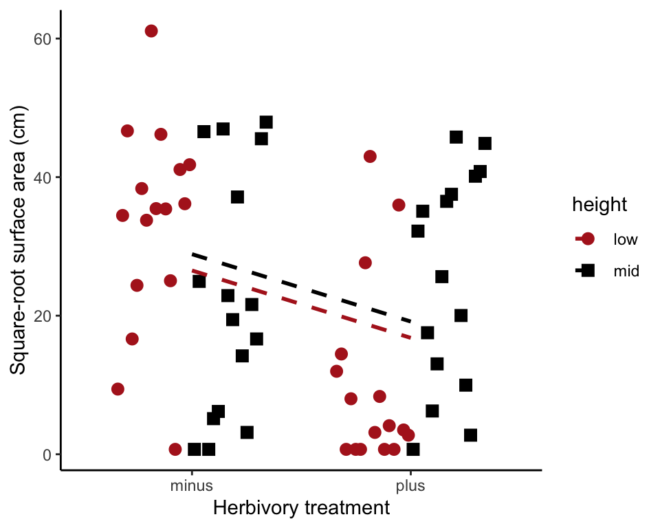
Fit the full model
In the formula below, height * herbivores is short for height + herbivores + height:herbivores. The last term is the interaction term. To plot the model fit, save the model predicted values to the data frame in a new variable (here named fit1). Use stat_summary() to plot them.
algaeFullModel <- lm(sqrtArea ~ height * herbivores, data = algae)
algae$fit1 <- predict(algaeFullModel)To visualize the model fit,
ggplot(data = algae, aes(x = herbivores, y = sqrtArea,
fill = height, color = height, shape = height)) +
geom_jitter(size = 3, position = position_dodge2(width = 0.7)) +
scale_colour_manual(values = c("firebrick", "black")) +
scale_shape_manual(values = c(16, 15)) +
stat_summary(aes(group = height, y = fit1), fun.y = mean, geom = "line",
linetype="dashed", size = 1) +
labs(x = "Herbivory treatment", y = "Square-root surface area (cm)") +
theme_classic()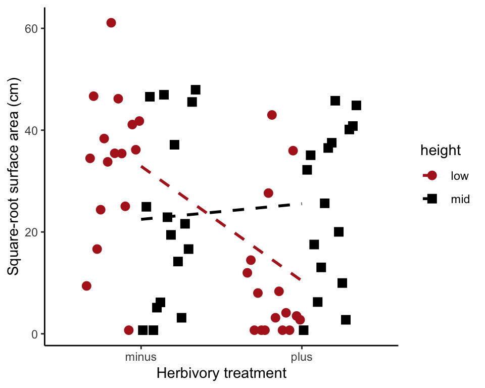
The following commands work in base R.
interaction.plot(algae$herbivores, algae$height, response = predict(algaeFullModel),
ylim = range(algae$sqrtArea), trace.label = "Height", las = 1,
ylab = "Square root surface area (cm)", xlab = "Herbivore treatment")
adjustAmount <- 0.05
points(sqrtArea ~ c(jitter(as.numeric(as.factor(herbivores)),
factor = 0.2) + adjustAmount),
data = subset(algae, height == "low"), pch = 15)
points(sqrtArea ~ c(jitter(as.numeric(as.factor(herbivores)),
factor = 0.2) - adjustAmount),
data = subset(algae, height == "mid"), pch = 16, col = "firebrick")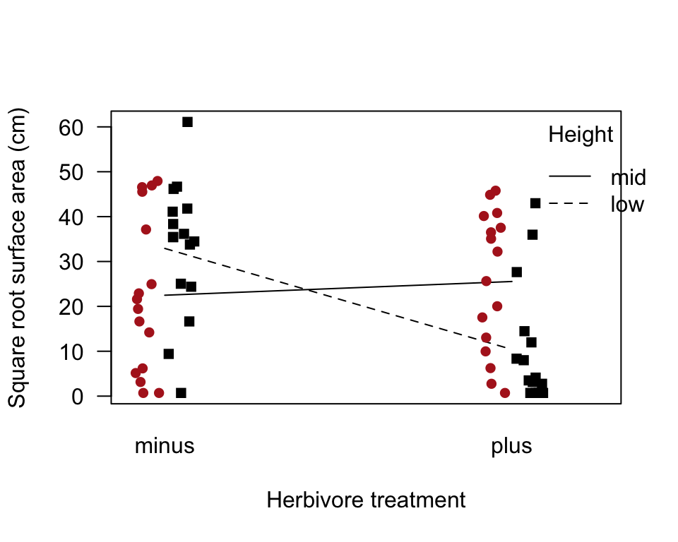
Test improvement in fit
This generates an \(F\) test of whether the full model with the interaction term is a signifcantly better fit than the reduced model that lacks the interaction term. anova() can compare two specific models as long as one is a reduced version of the other.
anova(algaeNoInteractModel, algaeFullModel)## Analysis of Variance Table
##
## Model 1: sqrtArea ~ height + herbivores
## Model 2: sqrtArea ~ height * herbivores
## Res.Df RSS Df Sum of Sq F Pr(>F)
## 1 61 16888
## 2 60 14270 1 2617 11.003 0.001549 **
## ---
## Signif. codes: 0 '***' 0.001 '**' 0.01 '*' 0.05 '.' 0.1 ' ' 1Test all terms
Most commonly, this is done using either Type III sums of squares (see discussion in the book) or Type I sums of squares (which is the default in R). In the present example the two methods give the same answer, because the design is completely balanced, but this will not generally happen when the design is not balanced.
Here is how to test all model terms using Type III sums of squares. We need to include a contrasts argument for the two categorical variables in the lm() command. Then we need to load the car package and use its Anova() command. Note that “A” is in upper case in Anova() - a very subtle but important difference.
algaeFullModelTypeIII <- lm(sqrtArea ~ height * herbivores, data = algae,
contrasts = list(height = contr.sum, herbivores = contr.sum))
Anova(algaeFullModelTypeIII, type = "III") # note "A" in Anova is capitalized## Anova Table (Type III tests)
##
## Response: sqrtArea
## Sum Sq Df F value Pr(>F)
## (Intercept) 33381 1 140.3509 < 2.2e-16 ***
## height 89 1 0.3741 0.543096
## herbivores 1512 1 6.3579 0.014360 *
## height:herbivores 2617 1 11.0029 0.001549 **
## Residuals 14271 60
## ---
## Signif. codes: 0 '***' 0.001 '**' 0.01 '*' 0.05 '.' 0.1 ' ' 1Here is how we test all model terms using “Type I” (sequential) sums of squares. Note that “a” is in lower case in anova().
anova(algaeFullModel)## Analysis of Variance Table
##
## Response: sqrtArea
## Df Sum Sq Mean Sq F value Pr(>F)
## height 1 89.0 88.97 0.3741 0.543096
## herbivores 1 1512.2 1512.18 6.3579 0.014360 *
## height:herbivores 1 2617.0 2616.96 11.0029 0.001549 **
## Residuals 60 14270.5 237.84
## ---
## Signif. codes: 0 '***' 0.001 '**' 0.01 '*' 0.05 '.' 0.1 ' ' 1Residual plot
This plots the residuals from the full model against the predicted (fitted) values.
plot( residuals(algaeFullModel) ~ fitted(algaeFullModel) )
abline(0,0)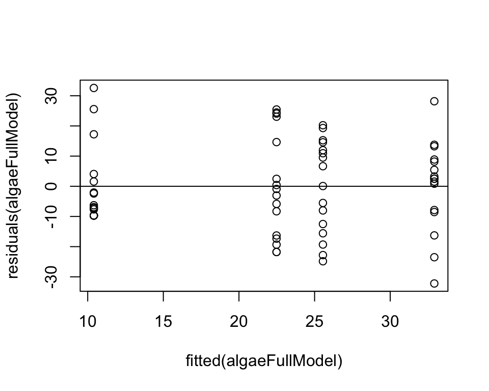
Normal quantile plot of residuals.
qqnorm(residuals(algaeFullModel), pch = 16, col = "firebrick",
las = 1, ylab = "Residuals", xlab = "Normal quantile", main = "")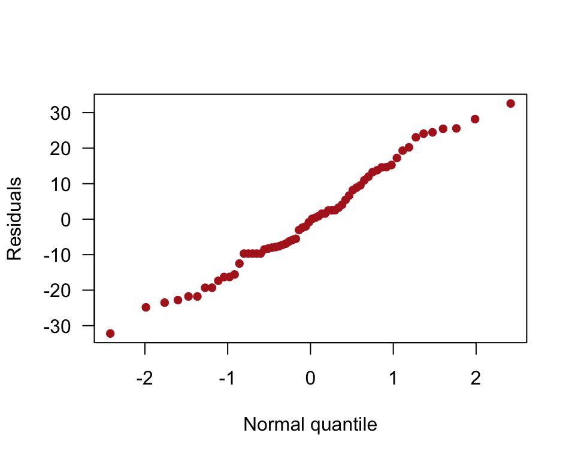
Example 18.4 Mole-rat layabouts
Analyze a factor while adjusting for a covariate, comparing energy expenditure of two castes of naked mole-rat while adjusting for differences in body mass using analysis of covariance ANCOVA.
Read and inspect data
moleRat <- read.csv(url("https://whitlockschluter3e.zoology.ubc.ca/Data/chapter18/chap18e4MoleRatLayabouts.csv"), stringsAsFactors = FALSE)
head(moleRat)## caste lnMass lnEnergy
## 1 worker 3.850148 3.688879
## 2 worker 3.988984 3.688879
## 3 worker 4.110874 3.688879
## 4 worker 4.174387 3.663562
## 5 worker 4.248495 3.871201
## 6 worker 4.262680 3.850148Scatter plot
ggplot(moleRat, aes(lnMass, lnEnergy, colour = caste, shape = caste)) +
geom_point(size = 3) +
scale_colour_manual(values = c("firebrick", "firebrick")) +
scale_shape_manual(values = c(16, 1)) +
labs(x = "ln(body mass)", y = "ln(daily energy expenditure)") +
theme_classic()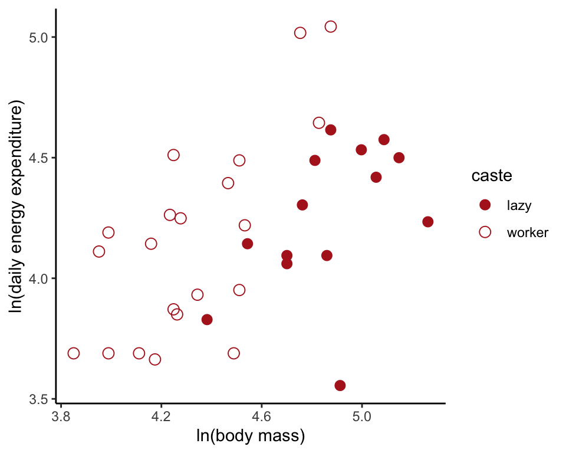
Fit reduced model
Fit models to the data, beginning with the model lacking an interaction term. Use lm() because caste and mass are fixed effects. Save the predicted values in the data frame.
moleRatNoInteractModel <- lm(lnEnergy ~ lnMass + caste, data = moleRat)
moleRat$fit0 <- predict(moleRatNoInteractModel)
ggplot(moleRat, aes(lnMass, lnEnergy, colour = caste,
shape = caste, linetype=caste)) +
geom_line(aes(y = fit0), size = 1, color = "black") +
geom_point(size = 3) +
scale_colour_manual(values = c("firebrick", "firebrick")) +
scale_shape_manual(values = c(16, 1)) +
labs(x = "ln(body mass)", y = "ln(daily energy expenditure)") +
theme_classic()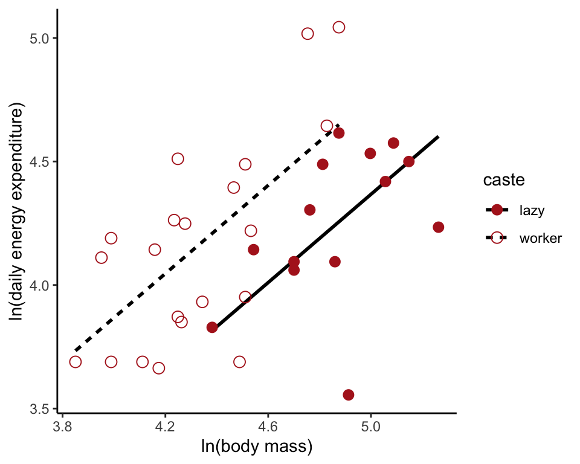
Fit the full model
THe full model includes the interaction term. To visualize, we can save the predcted values in the data frame as above. However, geom_smooth(method = "lm", ...) will automatically plot the full model.
moleRatFullModel <- lm(lnEnergy ~ lnMass * caste, data = moleRat)
ggplot(moleRat, aes(lnMass, lnEnergy, colour = caste,
shape = caste, linetype=caste)) +
geom_smooth(method = "lm", size = 1, se = FALSE, col = "black") +
geom_point(size = 3) +
scale_colour_manual(values = c("firebrick", "firebrick")) +
scale_shape_manual(values = c(16, 1)) +
labs(x = "ln(body mass)", y = "ln(daily energy expenditure)") +
theme_classic()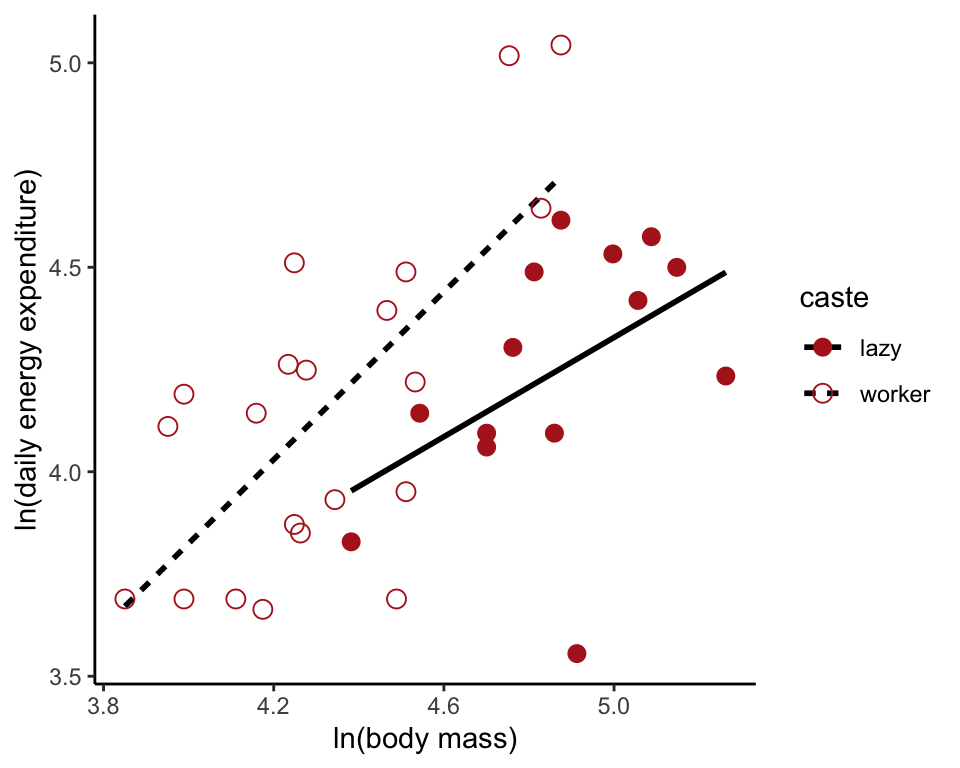
Test improvement in fit
The command below explicitly compares the models with and without the interaction term. The only test conducted is whether the full model, with an interaction term, is a significantly better fit than the reduced model, which does not include the interaction term.
anova(moleRatNoInteractModel, moleRatFullModel)## Analysis of Variance Table
##
## Model 1: lnEnergy ~ lnMass + caste
## Model 2: lnEnergy ~ lnMass * caste
## Res.Df RSS Df Sum of Sq F Pr(>F)
## 1 32 2.8145
## 2 31 2.7249 1 0.089557 1.0188 0.3206Test of differenct intercepts
We can test for different intercepts if we assume that the regression slopes are equal, i.e., that no interaction term is present. Most commonly this is done using either “Type III” sums of squares (see footnote 5 on p 618 of the book) or “Type I” sums of squares (the default in R). The two methods do not give identical answers here because the design is not balanced (in a balanced design, each value of the x-variable would have the same number of y-observations from each group).
Test using “Type III” sums of squares. We need to include a contrasts argument for the categorical variable in the lm() command. Then we use the Anova() command from the car package. Note that “A” is in upper case in Anova().
moleRatNoInteractModelTypeIII <- lm(lnEnergy ~ lnMass + caste, data = moleRat,
contrasts = list(caste = contr.sum))
Anova(moleRatNoInteractModelTypeIII, type = "III") # note "A" in Anova is capitalized## Anova Table (Type III tests)
##
## Response: lnEnergy
## Sum Sq Df F value Pr(>F)
## (Intercept) 0.00111 1 0.0126 0.9112
## lnMass 1.88152 1 21.3923 5.887e-05 ***
## caste 0.63747 1 7.2478 0.0112 *
## Residuals 2.81450 32
## ---
## Signif. codes: 0 '***' 0.001 '**' 0.01 '*' 0.05 '.' 0.1 ' ' 1Test using “Type I” (sequential) sums of squares. Make sure that the covariate (lnMass) comes before the factor (caste) in the lm() formula, as shown, because we want to test the caste difference after statistically controlling for size. Note that “a” is in lower case in anova().
moleRatNoInteractModel <- lm(lnEnergy ~ lnMass + caste, data = moleRat)
anova(moleRatNoInteractModel)## Analysis of Variance Table
##
## Response: lnEnergy
## Df Sum Sq Mean Sq F value Pr(>F)
## lnMass 1 1.31061 1.31061 14.9013 0.0005178 ***
## caste 1 0.63747 0.63747 7.2478 0.0111984 *
## Residuals 32 2.81450 0.08795
## ---
## Signif. codes: 0 '***' 0.001 '**' 0.01 '*' 0.05 '.' 0.1 ' ' 1Residual plot
plot( residuals(moleRatNoInteractModel) ~ fitted(moleRatNoInteractModel) )
abline(0,0)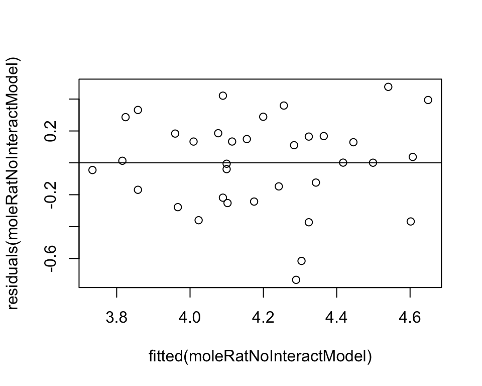
Normal quantile plot of residuals
qqnorm(residuals(moleRatNoInteractModel), pch = 16, col = "firebrick",
las = 1, ylab = "Residuals", xlab = "Normal quantile", main = "")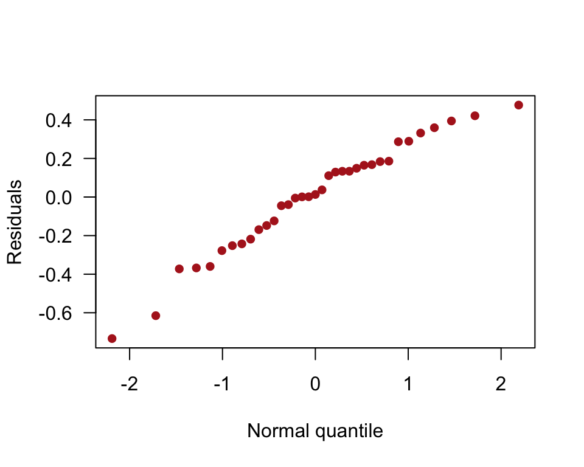